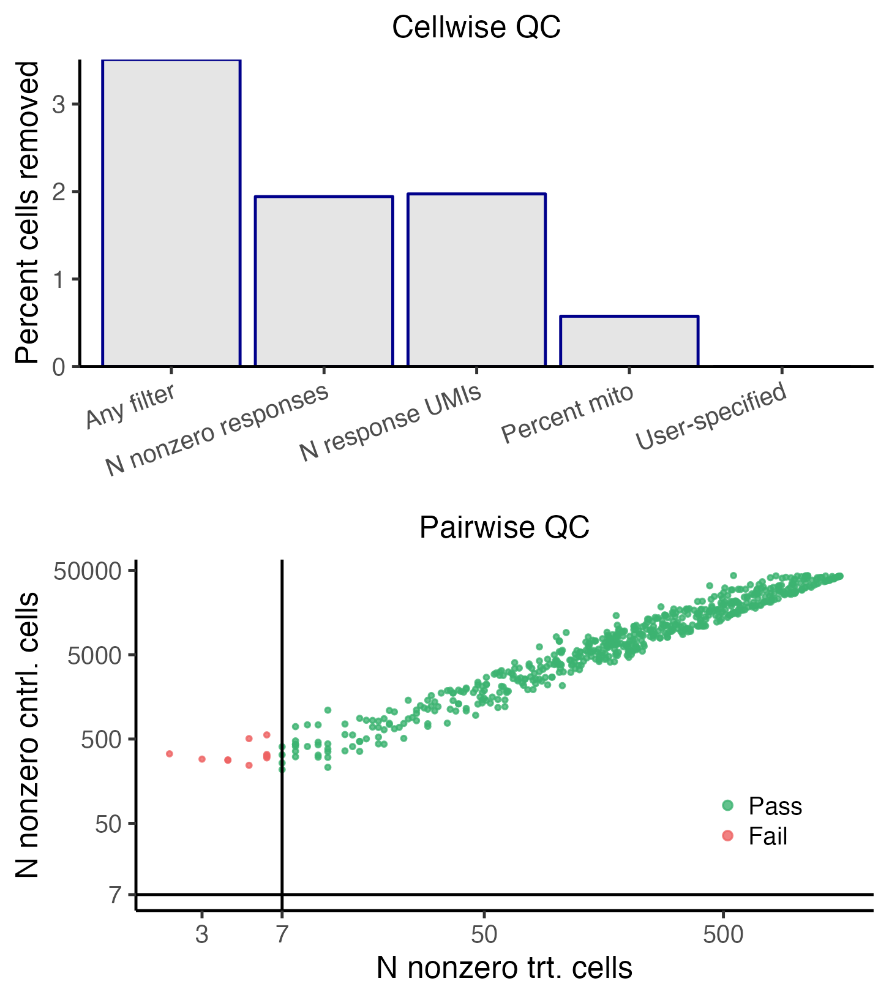

install.packages("devtools")
devtools::install_github("katsevich-lab/sceptre")The whole game
Note
This chapter is self-contained, and first-time users can get started with sceptre by reading this chapter only.
sceptre is an R package that facilitates statistically rigorous, computationally efficient, and user-friendly single-cell CRISPR screen data analysis. Users can install sceptre via the following command.
Users can load sceptre via a call to library().
The standard pipeline involved in applying sceptre to analyze a dataset consists of several steps, which we summarize in the following schematic.
sceptre pipelineThis chapter illustrates application of sceptre to a CRISPRi screen of candidate enhancers in K562 cells (Gasperini et al, 2019). The goal of the analysis is to confidently link enhancers to genes by testing for changes in gene expression in response to the CRISPR perturbations of the candidate enhancers.
Using sceptre is simple; carrying out an entire analysis requires only a few lines of code. Below, we provide a minimal working example of applying sceptre to analyze the example data. First, we load the example data into R via the function import_data_from_cellranger(), which creates a sceptre_object, an object-based representation of the single-cell CRISPR screen data. Next, we specify the gRNA-gene pairs that we seek to test for association. Then, we call the pipeline functions on the sceptre_object in order. Finally, we write the outputs to the directory ~/sceptre_outputs.
# load the data, creating a sceptre_object
directories <- paste0(
system.file("extdata", package = "sceptre"),
"/highmoi_example/gem_group_", 1:2
)
data(grna_target_data_frame_highmoi)
sceptre_object <- import_data_from_cellranger(
directories = directories,
moi = "high",
grna_target_data_frame = grna_target_data_frame_highmoi
)
# construct the grna-gene pairs to analyze
positive_control_pairs <- construct_positive_control_pairs(sceptre_object)
discovery_pairs <- construct_cis_pairs(
sceptre_object,
positive_control_pairs = positive_control_pairs
)
# apply the pipeline functions to the sceptre_object in order
sceptre_object <- sceptre_object |> # |> is R's base pipe, similar to %>%
set_analysis_parameters(discovery_pairs, positive_control_pairs) |>
run_calibration_check() |>
run_power_check() |>
run_discovery_analysis()
# write the results to disk
write_outputs_to_directory(sceptre_object, "~/sceptre_outputs")That’s it. The directory sceptre_outputs now contains a variety of results and plots from the analysis, including the set of significant target-response pairs from among the discovery pairs:
grna_target response_id p_value log_2_fold_change
1: candidate_enh_19 ENSG00000147454 4.362186e-40 -0.7337873
2: candidate_enh_23 ENSG00000130560 8.639233e-14 -0.1637574
3: candidate_enh_1 ENSG00000069275 3.708631e-05 -0.1629311
4: candidate_enh_3 ENSG00000126698 7.996432e-04 0.1087084
5: candidate_enh_2 ENSG00000066027 9.610934e-04 -0.2275959We describe each step of the pipeline in greater detail below.
1. Import data
The first step is to import the data. Data can be imported into sceptre from 10X Cell Ranger or Parse outputs, as well as from R matrices. The simplest way to import the data is to read the output of one or more calls to cellranger_count() into sceptre via the function import_data_from_cellranger(). import_data_from_cellranger() requires three arguments: directories, grna_target_data_frame, and moi.
-
directoriesis a character vector specifying the locations of the directories outputted by one or more calls tocellranger_count(). Below, we set the variabledirectoriesto the (machine-dependent) location of the example CRISPRi data on disk.directories <- paste0( system.file("extdata", package = "sceptre"), "/highmoi_example/gem_group_", 1:2 ) directories # file paths to the example data on your computer[1] "/Library/Frameworks/R.framework/Versions/4.2/Resources/library/sceptre/extdata/highmoi_example/gem_group_1" [2] "/Library/Frameworks/R.framework/Versions/4.2/Resources/library/sceptre/extdata/highmoi_example/gem_group_2"directoriespoints to two directories, both of which store the expression data in matrix market format and contain the filesbarcodes.tsv.gz,features.tsv.gz, andmatrix.mtx.gz.list.files(directories[1])[1] "barcodes.tsv.gz" "features.tsv.gz" "matrix.mtx.gz"list.files(directories[2])[1] "barcodes.tsv.gz" "features.tsv.gz" "matrix.mtx.gz" -
grna_target_data_frameis a data frame mapping each individual gRNA to the genomic element that the gRNA targets.grna_target_data_framecontains two required columns:grna_idandgrna_target.grna_idis the ID of an individual gRNA, whilegrna_targetis a label specifying the genomic element that the gRNA targets. (Typically, multiple gRNAs are designed to target a given genomic element in a single-cell CRISPR screen.) Non-targeting (NT) gRNAs are assigned a gRNA target label of “non-targeting”.grna_target_data_frameoptionally contains the columnschr,start, andend, which give the chromosome, start coordinate, and end coordinate, respectively, of the genomic region that each gRNA targets. We load and examine thegrna_target_data_framecorresponding to the example data.grna_id grna_target chr start end 1 grna_CCGGGCG ENSG00000069482 chr11 68451943 68451958 2 grna_TGGCGGC ENSG00000069482 chr11 68451958 68451974 3 grna_AAGGCCG ENSG00000100316 chr22 39715775 39715790 4 grna_GACGCCG ENSG00000100316 chr22 39715790 39715806 21 grna_TCTTGAC candidate_enh_1 chr1 205720419 205720623 22 grna_TGATCGC candidate_enh_1 chr1 205720623 205720828 23 grna_ATAGGAG candidate_enh_10 chr19 19475680 19475878 24 grna_GCAGGCA candidate_enh_10 chr19 19475878 19476077 80 grna_TATTCGT non-targeting <NA> NA NA 81 grna_GACCTCC non-targeting <NA> NA NA 82 grna_TTTCTCT non-targeting <NA> NA NA 83 grna_AATGAGG non-targeting <NA> NA NASome gRNAs (e.g.,
grna_CCGGGCGandgrna_TGGCGGC) target gene transcription start sites and serve as positive controls; other gRNAs (e.g.,grna_TCTTGACandgrna_TGATCGC) target candidate enhancers, while others still (e.g.,grna_TATTCGTandgrna_GACCTCC) are non-targeting. Each gene and candidate enhancer in this dataset is targeted by exactly two gRNAs. -
moiis a string specifying the multiplicity-of-infection (MOI) of the data, taking values “high” or “low”. A high-MOI (respectively, low-MOI) dataset is one in which the experimenter has aimed to insert multiple gRNAs (respectively, a single gRNA) into each cell. (If a given cell is determined to contain multiple gRNAs in a low-MOI screen, that cell is removed as part of the quality control step, as discussed below.) The example dataset is a high MOI dataset, and so we setmoito “high”.moi <- "high"
Finally, we call the function import_data_from_cellranger(), passing directories, grna_target_data_frame, and moi as arguments.
sceptre_object <- import_data_from_cellranger(
directories = directories,
grna_target_data_frame = grna_target_data_frame_highmoi,
moi = moi
)import_data_from_cellranger() returns a sceptre_object, which is an object-based representation of the single-cell CRISPR screen data. Evaluating sceptre_object in the console prints a helpful summary of the data.
sceptre_objectAn object of class sceptre_object.
Attributes of the data:
• 45919 cells
• 526 responses
• High multiplicity-of-infection
• 70 targeting gRNAs (distributed across 35 targets)
• 25 non-targeting gRNAs
• 6 covariates (batch, grna_n_nonzero, grna_n_umis, response_n_nonzero, response_n_umis, response_p_mito)Several metrics are displayed, including the number of cells, the number of genes (or “responses”), and the number of gRNAs present in the data. sceptre also automatically computes the following cell-specific covariates: grna_n_nonzero (i.e., the number of gRNAs expressed in the cell), grna_n_umis (i.e., the number of gRNA UMIs sequenced in the cell), response_n_nonzero (i.e., the number of responses expressed in the cell), response_n_umis (i.e., the number of response UMIs sequenced in the cell), response_p_mito (i.e., the fraction of transcripts mapping to mitochondrial genes), and batch. (Cells loaded from different directories are assumed to come from different batches.)
See Chapter 1 for more details about data import.
2. Set analysis parameters
The second step is to set the analysis parameters. The most important analysis parameters are the discovery pairs, positive control pairs, sidedness, and gRNA grouping strategy.
-
Discovery pairs and positive control pairs. The primary goal of
sceptreis to determine whether perturbation of a gRNA target (such as an enhancer) leads to a change in expression of a response (such as gene). We use the term target-response pair to refer to a given gRNA target and response that we seek to test for association (upon perturbation of the gRNA target). A discovery target-response pair is a target-response pair whose association status we do not know but would like to learn. For example, in an experiment in which we aim to link putative enhancers to genes, the discovery target-response pairs might consist of the set of putative enhancers and genes in close physical proximity to one another.A positive control (resp., negative control) target-response pair is a target-response pair for which we know that there is (resp., is not) a relationship between the target and the response. Positive control target-response pairs often are formed by coupling a transcription start site to the gene known to be regulated by that transcription start site. Negative control target-response pairs, meanwhile, typically are constructed by pairing negative control gRNAs to one or more responses. (We defer a detailed discussion of negative control pairs to a later section of this vignette.) Discovery pairs are of primary scientific interest, while positive control and negative control pairs serve a mainly technial purpose, helping us verify that the biological assay and statistical methodology are in working order.
sceptreoffers several helper functions to facilitate the construction of positive control and discovery pairs. The functionconstruct_positive_control_pairs()takes as argument asceptre_objectand outputs the set of positive control pairs formed by matching gRNA targets (as contained in thegrna_target_data_frame) to response IDs. Positive control pairs are optional and need not be computed.positive_control_pairs <- construct_positive_control_pairs(sceptre_object) head(positive_control_pairs)grna_target response_id 1 ENSG00000069482 ENSG00000069482 2 ENSG00000100316 ENSG00000100316 3 ENSG00000104131 ENSG00000104131 4 ENSG00000122026 ENSG00000122026 5 ENSG00000135821 ENSG00000135821 6 ENSG00000147669 ENSG00000147669Next, the functions
construct_cis_pairs()andconstruct_trans_pairs()facilitate the construction of cis and trans discovery sets, respectively.construct_cis_pairs()takes as arguments asceptre_objectand an integerdistance_thresholdand returns the set of response-target pairs located on the same chromosome withindistance_thresholdbases of one another.positive_control_pairsoptionally can be passed to this function, in which case positive control gRNA targets are excluded from the cis pairs. (Note thatconstruct_cis_pairs()assumes that the responses are genes rather than, say, proteins or chromatin-derived features.)discovery_pairs <- construct_cis_pairs( sceptre_object = sceptre_object, positive_control_pairs = positive_control_pairs, distance_threshold = 5e6 ) discovery_pairs[c(1:4, 101:104),]grna_target response_id 1 candidate_enh_1 ENSG00000174529 2 candidate_enh_1 ENSG00000117222 3 candidate_enh_1 ENSG00000133059 4 candidate_enh_1 ENSG00000133069 101 candidate_enh_10 ENSG00000064490 102 candidate_enh_10 ENSG00000254901 103 candidate_enh_10 ENSG00000184162 104 candidate_enh_10 ENSG00000105705construct_trans_pairs()constructs the entire set of possible target-response pairs. See the Set Analysis Parameters vignette (vignette("set-analysis-parameters")) for more information about these functions. -
Sidedness. The parameter
sidecontrols whether to run a left-tailed ("left"), right-tailed ("right"), or two-tailed ("both"; default) test. A left-tailed (resp., right-tailed) test is appropriate when testing for a decrease (resp., increase) in expression; a two-tailed test, by contrast, is appropriate when testing for an increase or decrease in expression. A left-tailed test is the most appropriate choice for a CRISPRi screen of enhancers, and so we setsideto"left".side <- "left" gRNA integration strategy. Typically, multiple gRNAs are designed to target a given genomic element. The parameter
grna_integration_strategycontrols if and how gRNAs that target the same genomic element are integrated. The default option,"union", combines gRNAs that target the same element into a single “grouped gRNA;” this “grouped gRNA” is tested for association against the responses to which the element is paired.grna_integration_strategyalso can be set to “singleton,” in which case each gRNA targeting a given element is tested individually against the responses paired to that element. In our analysis we use the default “union” strategy.
Finally, we set the analysis parameters by calling the function set_analysis_parameters(), passing sceptre_object, discovery_pairs, positive_control_pairs, and side as arguments. Note that sceptre_object and discovery_pairs are the only required arguments to this function.
sceptre_object <- set_analysis_parameters(
sceptre_object = sceptre_object,
discovery_pairs = discovery_pairs,
positive_control_pairs = positive_control_pairs,
side = side
)
print(sceptre_object) # output suppressed for brevitySee Chapter 2 for more information about setting the analysis parameters.
3. Assign gRNAs to cells (optional)
The third step is to assign gRNAs to cells. This step can be skipped, in which case gRNAs are assigned to cells automatically using default options. The gRNA assignment step involves using the gRNA UMI counts to determine which cells contain which gRNAs. We begin by plotting the UMI count distribution of several randomly selected gRNAs via a call to the function plot_grna_count_distributions().
plot_grna_count_distributions(sceptre_object)
The gRNAs display fairly bimodal count distributions. Consider, for example, gRNA_CCTGACA (top left corner). This gRNA exhibits a UMI count of \(\leq 1\) or \(\geq 5\) in most cells and a UMI count of 2, 3, or 4 in only a handful of cells. The vast majority of cells with a UMI count of 1 likely do not actually contain gRNA_CCTGACA. This is an example of “background contamination,” the phenomenon by which gRNA transcripts sometimes map to cells that do not contain the corresponding gRNA.
sceptre provides three methods for assigning gRNAs to cells (the “mixture method,” the “maximum method,” and the “thresholding method”), all of which account for background contamination. The default method for high-MOI data is the “mixture method.” The gRNA counts are regressed onto the (unobserved) gRNA presence/absence indicator and the cell-specific covariates (e.g., grna_n_umis, batch) via a latent variable Poisson GLM. The fitted model yields the probability that each cell contains the gRNA, and these probabilities are thresholded to assign the gRNA to cells. The default method in low-MOI is the simpler “maximum” approach: the gRNA that accounts for the greatest number of UMIs in a given cell is assigned to that cell. A backup option in both low- and high-MOI is the “thresholding” approach: a given gRNA is assigned to a given cell if the UMI count of that gRNA in that cell exceeds some integer threshold.
We carry out the gRNA assignment step via a call to the function assign_grnas(). assign_grnas() takes arguments sceptre_object (required) and method (optional); the latter argument can be set to "mixture", "maximum", or "thresholding". We parallelize execution of assign_grnas() by setting parallel to TRUE. (Windows users should remove the parallel = TRUE argument, as parallel execution is not yet configured for Windows.)
sceptre_object <- assign_grnas(sceptre_object = sceptre_object, parallel = TRUE)
print(sceptre_object) # output suppressed for brevityWe can call plot() on the resulting sceptre_object to render a plot summarizing the output of the gRNA-to-cell assignment step.
plot(sceptre_object)The top panel plots the gRNA-to-cell assignments of three randomly selected gRNAs. In each plot the points represent cells; the vertical axis indicates the UMI count of the gRNA in a given cell, and the horizontal axis indicates whether the cell has been classified as “perturbed” (i.e., it contains the gRNA) or unperturbed (i.e., it does not contain the gRNA). Perturbed (resp., unperturbed) cells are shown in the left (resp., right) column. The bottom left panel is a barplot of the number of cells to which each gRNA has been mapped. Finally, the bottom right panel is a histogram of the number of gRNAs contained in each cell. The mean number of gRNAs per cell — i.e., the MOI — is displayed in purple text.
See Chapter 3 for more information about assigning gRNAs to cells.
4. Run quality control (optional)
The fourth step is to run quality control (QC). This step likewise can be skipped, in which case QC is applied automatically using default options. sceptre implements two kinds of QC: cellwise QC and pairwise QC. The former aims to remove low-quality cells, while the latter aims to remove low-quality target-response pairs.
The cellwise QC that sceptre implements is standard in single-cell analysis. Cells for which response_n_nonzero (i.e., the number of expressed responses) or response_n_umis (i.e., the number of response UMIs) is extremely high or extremely low are removed. Likewise, cells for which response_p_mito (i.e., the fraction of UMIs mapping to mitochondrial genes) is excessively high are removed. Additionally, in low-MOI, cells that contain multiple gRNAs (as determined during the RNA-to-cell assignment step) are removed. Finally, users optionally can provide a list of additional cells to remove.
sceptre also implements QC at the level of the target-response pair. For a given pair we define the “treatment cells” as those that contain a gRNA targeting the given target. Next, we define the “control cells” as the cells against which the treatment cells are compared to carry out the differential expression test. We define the “number of nonzero treatment cells” (n_nonzero_trt) as the number of treatment cells with nonzero expression of the response; similarly, we define the “number of nonzero control cells” (n_nonzero_cntrl) as the number of control cells with nonzero expression of the response. sceptre filters out pairs for which n_nonzero_trt or n_nonzero_cntrl falls below some threshold (by default 7).
We call the function run_qc() on the sceptre_object to carry out cellwise and pairwise QC. run_qc() has several optional arguments that control the stringency of the various QC thresholds. For example, we set p_mito_threshold = 0.075, which filters out cells whose response_p_mito value exceeds 0.075. (The optional arguments are set to reasonable defaults; the default for p_mito_threshold is 0.2, for instance).
We can visualize the output of the QC step by calling plot() on the updated sceptre_object.
plot(sceptre_object)
The top panel depicts the outcome of the cellwise QC. The various cellwise QC filters (e.g., “N nonzero responses,” “N response UMIs,” “Percent mito”, etc.) are shown on the horizontal axis, and the percentage of cells removed due application of a given QC filter is shown on the vertical axis. Note that a cell can be flagged by multiple QC filters; for example, a cell might have an extremely high response_n_umi value and an extremely high response_n_nonzero value. Thus, the height of the “any filter” bar (which indicates the percentage of cells removed due to application of any filter) need not be equal to the sum of the heights of the other bars. The bottom panel depicts the outcome of the pairwise QC. Each point corresponds to a target-response pair; the vertical axis (resp., horizontal axis) indicates the n_nonzero_trt (resp., n_nonzero_cntrl) value of that pair. Pairs for which n_nonzero_trt or n_nonzero_cntrl fall below the threshold are removed (red), while the remaining pairs are retained (green).
See Chapter 4 for more information about QC.
5. Run calibration check
The fifth step is to run the calibration check. The calibration check is an analysis that verifies that sceptre controls the rate of false discoveries on the dataset under analysis. The calibration check proceeds as follows. First, negative control target-response pairs are constructed (automatically) by coupling subsets of NT gRNAs to randomly selected responses. Importantly, the negative control pairs are constructed in such a way that they are similar to the discovery pairs, the difference being that the negative control pairs are devoid of biological signal. Next, sceptre is applied to analyze the negative control pairs. Given that the negative control pairs are absent of signal, sceptre should produce approximately uniformly distributed p-values on the negative control pairs. Moreover, after an appropriate multiple testing correction, sceptre should make zero (or very few) discoveries on the negative control pairs. Verifying calibration via the calibration check increases our confidence that the discovery set that sceptre ultimately produces is uncontaminated by excess false positives.
We run the calibration check by calling the function run_calibration_check() on the sceptre_object.
sceptre_object <- run_calibration_check(sceptre_object, parallel = TRUE)
print(sceptre_object) # output suppressed for brevityWe can assess the outcome of the calibration check by calling plot() on the resulting sceptre_object.
plot(sceptre_object)The visualization consists of four panels, which we describe below.
The upper left panel is a QQ plot of the p-values plotted on an untransformed scale. The p-values should lie along the diagonal line, indicating uniformity of the p-values in the bulk of the distribution.
The upper right panel is a QQ plot of the p-values plotted on a negative log-10 transformed scale. The p-values again should lie along the diagonal line (with the majority of the p-values falling within the gray confidence band), indicating uniformity of the p-values in the tail of the distribution.
The lower left panel is a histogram of the estimated log-2 fold changes. The histogram should be roughly symmetric and centered around zero.
Finally, the bottom right panel is a text box displaying (i) the number of false discoveries that
sceptrehas made on the negative control data and (ii) the mean estimated log-fold change. The number of false discoveries should be a small integer like zero, one, two, or three, with zero being ideal. The mean estimated log-fold change, meanwhile, should be a numeric value close to zero; a number in the range [-0.1, 0.1] is adequate.
sceptre may not exhibit good calibration initially, which is OK. See Chapter 5 for more information about the calibration check analysis, including concrete strategies for improving calibration.
6. Run power check (optional)
The sixth step — which is optional — is to run the power check. The power check involves applying sceptre to analyze the positive control pairs. Given that the positive control pairs are known to contain signal, sceptre should produce significant (i.e., small) p-values on the positive control pairs. The power check enables us to assess sceptre’s power (i.e., its ability to detect true associations) on the dataset under analysis. We run the power check by calling the function run_power_check() on the sceptre_object.
sceptre_object <- run_power_check(sceptre_object, parallel = TRUE)
print(sceptre_object) # output suppressed for brevityWe can visualize the outcome of the power check by calling plot() on the resulting sceptre_object.
plot(sceptre_object)
Each point in the plot corresponds to a target-response pair, with positive control pairs in the left column and negative control pairs in the right column. The vertical axis indicates the p-value of a given pair; smaller (i.e., more significant) p-values are positioned higher along this axis (p-values truncated at \(10^{-20}\) for visualization). The positive control p-values should be small, and in particular, smaller than the negative control p-values.
7. Run discovery analysis
The seventh and penultimate step is to run the discovery analysis. The discovery analysis entails applying sceptre to analyze the discovery pairs. We run the discovery analysis by calling the function run_discovery_analysis().
sceptre_object <- run_discovery_analysis(sceptre_object, parallel = TRUE)
print(sceptre_object) # output suppressed for brevityWe can visualize the outcome of the discovery analysis by calling plot() on the resulting sceptre_object.
plot(sceptre_object)The visualization consists of four panels.
The upper left plot superimposes the discovery p-values (blue) on top of the negative control p-values (red) on an untransformed scale.
The upper right plot is the same as the upper left plot, but the scale is negative log-10 transformed. The discovery p-values should trend above the diagonal line, indicating the presence of signal in the discovery set. The horizontal dashed line indicates the multiple testing threshold; discovery pairs whose p-value falls above this line are called as significant.
The bottom left panel is a volcano plot of the p-values and log fold changes of the discovery pairs. Each point corresponds to a pair; the estimated log-2 fold change of the pair is plotted on the horizontal axis, and the (negative log-10 transformed) p-value is plotted on the vertical axis. The horizontal dashed line again indicates the multiple testing threshold. Points above the dashed line (colored in purple) are called as discoveries, while points below (colored in blue) are called as insignificant.
The bottom right panel is a text box displaying the number of discovery pairs called as significant.
8. Write outputs to directory
The eighth and final step is to write the outputs of the analysis to a directory on disk. We call the function write_outputs_to_directory(), which takes as arguments a sceptre_object and directory; directory is a string indicating the location of the directory in which to write the results contained within the sceptre_object.
write_outputs_to_directory(
sceptre_object = sceptre_object,
directory = "~/sceptre_outputs"
)write_outputs_to_directory() writes several files to the specified directory: a text-based summary of the analysis (“analysis_summary.txt”), the various plots (“*.png”), and the calibration check, power check, and discovery analysis results (“results_run_calibration_check.rds,” “results_run_power_check.rds,” and “results_run_discovery_analysis.rds,” respectively).
list.files("~/sceptre_outputs") [1] "analysis_summary.txt" "plot_assign_grnas.png"
[3] "plot_grna_count_distributions.png" "plot_run_calibration_check.png"
[5] "plot_run_discovery_analysis.png" "plot_run_power_check.png"
[7] "plot_run_qc.png" "results_run_calibration_check.rds"
[9] "results_run_discovery_analysis.rds" "results_run_power_check.rds" We also can obtain the calibration check, power check, and discovery analysis results in R via a call to the function get_result(), passing as arguments sceptre_object and analysis, where the latter is a string indicating the function whose results we are querying.
result <- get_result(sceptre_object, analysis = "run_discovery_analysis")The variable result is a data frame, the rows of which correspond to target-response pairs, and the columns of which are as follows: response_id, grna_target, n_nonzero_trt, n_nonzero_cntrl, pass_qc (a TRUE/FALSE value indicating whether the pair passes pairwise QC), p_value, log_2_fold_change, and significant (a TRUE/FALSE value indicating whether the pair is called as significant).
head(result) response_id grna_target n_nonzero_trt n_nonzero_cntrl pass_qc
1: ENSG00000147454 candidate_enh_19 987 38763 TRUE
2: ENSG00000136938 candidate_enh_20 829 43056 TRUE
3: ENSG00000165702 candidate_enh_23 421 17129 TRUE
4: ENSG00000136929 candidate_enh_20 507 30997 TRUE
5: ENSG00000135046 candidate_enh_25 438 32903 TRUE
6: ENSG00000106992 candidate_enh_22 693 30172 TRUE
p_value log_2_fold_change significant
1: 4.132597e-39 -0.7299781 TRUE
2: 3.674875e-37 -0.3377841 TRUE
3: 2.743547e-31 -0.7788056 TRUE
4: 7.498748e-24 -0.6062542 TRUE
5: 1.112902e-18 -0.8483076 TRUE
6: 1.142874e-14 -0.3438875 TRUEFurther reading
Each step of the pipeline has its own dedicated chapter. We encourage interested users to read these additional chapters one-by-one to learn more about the various options available at each step of the pipeline, starting with Chapter 1.